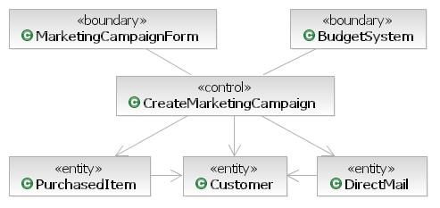

| Concept: Entity-Control-Boundary Pattern |
 |
|
| Related Elements |
|---|
When identifying the elements for some scenario of system behavior, you can align each participating element with one of three key perspectives: Entity, Control, or Boundary. This pattern is similar to the Model View Controller pattern (described here [BUS96] and here [WIKP-MVC] among other places), but the Entity Control Boundary pattern is not solely appropriate for dealing with user interfaces and it gives the controller a slightly different role to play. ECB Pattern Example Entity ElementsAn entity is a long-lived, passive element that is responsible for some meaningful chunk of information. This is not to say that entities are "data" while other design elements are "function". Entities perform behavior organized around some cohesive amount of data. An example entity for a customer service application would be a Customer entity that manages all information about a customer. A design element for this entity would include data on the customer, behavior to manage the data, behavior to validate customer information and perform other business calculations such as "is this customer allowed to purchase product X?" The identification of the entities as part of this pattern can be done many times at different levels of abstraction from the code, at different levels of granularity in size, and from the perspectives of different contexts. For example you could do an analysis pass on a scenario of creating a marketing campaign and identify the customer element with various customer data elements such as name and address plus various required behaviors such as the management of the name and address data and the ability to rate the customer based on some algorithm (such an application of this pattern would be abstract from code, coarse-grained, and have no specific context). Later you could do a pass on the same scenario applying an architectural mechanism for database access that breaks the address out into its own element, moves the responsibility for storing and retrieving customers to a new control element, and identifies some specific database decisions such as the usage of primary keys in the entities (such an application of this pattern would be closer to the code, finer-grained, and aligned with a database context). Control ElementsA control element manages the flow of interaction of the scenario. A control element could manage the end-to-end behavior of a scenario or it could manage the interactions between a subset of the elements. Behavior and business rules relating to the information relevant to the scenario should be assigned to the entities; the control elements are just responsible for the flow of the scenario. An example control element for a customer service application would be CreateMarketingCapmpaign. This design element would be responsive to certain front-end boundary elements and would collaborate with other entities, control elements, and back-end boundary elements to support the creation of a marketing campaign. As with the entity example above, there might be many passes over the identification of control elements. A first pass might be an analysis pass that identifies one control element for a scenario with behavior to make sure the design can support the flow of events, a subsequent pass might find controllers to manage reusable collaborations of low level elements that will map to a specific code unit to be written. Boundary ElementsA boundary element lies on the periphery of a system or subsystem, but within it. For any scenario being considered either across the whole system or within some subsystem, some boundary elements will be "front-end" elements that accept input from outside the area under design and other elements will be "back-end" managing communication to supporting elements outside the system or subsystem. Two example boundary elements for a customer service application might be a front-end MarketingCampaignForm and a back-end BugdetSystem element. The MarketingCampaignForm would manage the exchange of information between a user and the system and the BugdetSystem would manage the exchange of information between the system and an external system that manages budgets. An analysis pass could identify one boundary element for each external relevant to a scenario; subsequently these could be broken down into multiple boundary elements or small communities made up of collaborating elements of all three stereotypes. Walking the ScenarioOne can walk through a scenario initiated by something outside the bounds of the system or subsystem being designed and distribute the responsibility to perform behavior supporting the scenario to the elements identified of each type. The appropriate design element responsible for each action in the scenario will be as described in the definition of each of the element types described above. In addition to identifying the behavior necessary to perform the scenario, the initiation of this behavior from design element to design element identifies the necessary relationships. There are certain appropriate relations between the participating elements. An element can communicate to other elements of the same kind. Control elements can communicate with each of the other two kinds, but entities and boundary elements should not directly communicate. The table below shows appropriate links between design elements.
By applying this pattern, a robust design can be put together that identifies the elements, behavior, and relationships necessary to support a scenario. |
This program and the accompanying materials are made available under the View copyright information here: OpenUP Copyright |